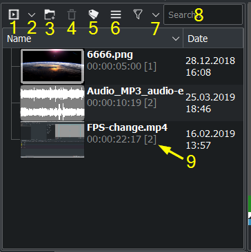
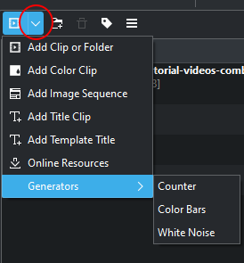
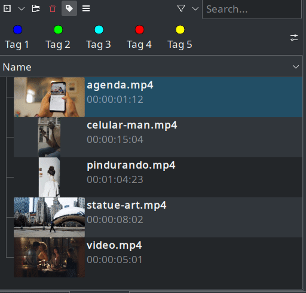
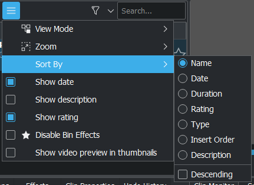
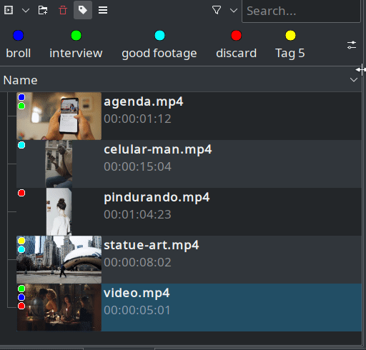
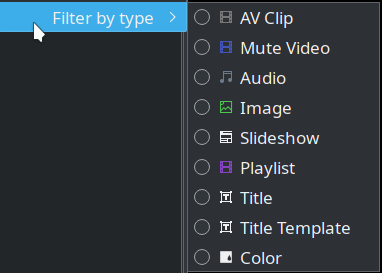

The Project Bin¶
The Project Bin is a view in Kdenlive which lists all the clips that are associated with the project. In earlier versions of Kdenlive this view was known as the Project Tree. In addition to the new name, versions 15.04 and higher introduced two new options to the view’s toolbar. The list following the example describes the options represented by the icons on the toolbar (identified by the numbers in the screenshots).
1. Opens the Project Folder in a window for selecting video and audio clips to be added to the bin.
2. Displays a drop down list for adding other clip types to the Project Bin.
3. Allows you to add folders to the Project Bin. These are not actual file system folders but virtual folders to help you organize large Project Bins. See Create Folder
4. Deletes the selected clip from the Project Bin (but not from the file system).
5 Color tagging. (Since version 20.04.0)
6. Brings up additional options shown below for customizing the Project Bin view .
7 Filter by tags and stars
Filtering by clip type
8. A search box to display all the clips in the bin whose filenames or titles contain the entered text.
9. Number of times this clip is used in the project timeline
Clips can be dragged from the Project Bin to the timeline.
{kind=link}